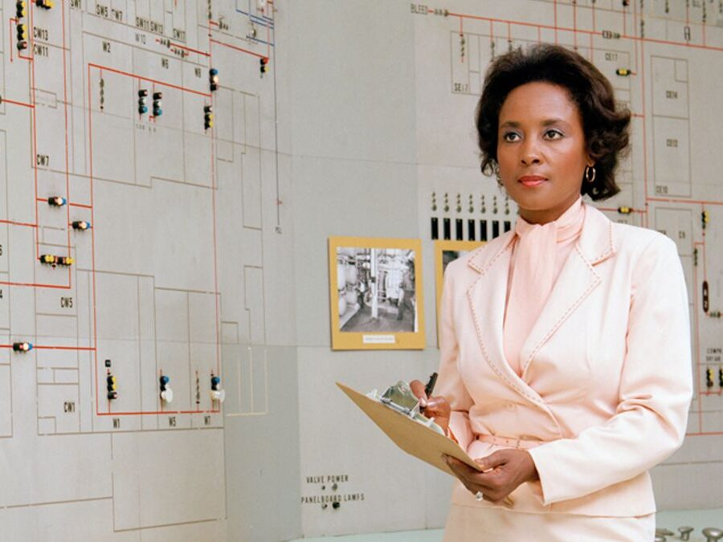

Women and Technology
Annie "The Computer Scientist" Easley
'When people have their biases and prejudiced, yes, I am aware. My head is not in the sand. But the thing is if can't work with you, I will work around you. I was not about to be so discouraged that I'd walk away.'
In 1955, Easley began her career as a “human computer,” doing computations for researchers. This involved analyzing problems and doing calculations by hand. Her earliest work involved running simulations for the newly planned Plum Brook Reactor Facility. When hired, she was one of only four African-American employees at the Lab. In a 2001 interview she said that she had never set out to be a pioneer.
When human computers were replaced by machines, Easley evolved along with the technology. She became an adept computer programmer, using languages like the Formula Translating System (Fortran) and the Simple Object Access Protocol (SOAP) to support a number of NASA’s programs. She developed and implemented code used in researching energy-conversion systems, analyzing alternative power technology—including the battery technology that was used for early hybrid vehicles, as well as for the Centaur upper-stage rocket.
Her 34-year career included developing and implementing computer code that analyzed alternative power technologies, supported the Centaur high-energy upper rocket stage, determined solar, wind and energy projects, and identified energy conversion systems and alternative systems to solve energy problems. During the 1970s Easley worked on a project examining damage to the ozone layer. With massive cuts in the NASA space program, Easley began working on energy problems; her energy assignments included studies to determine the life use of storage batteries, such as those used in electric utility vehicles. Her computer applications have been used to identify energy conversion systems that offer the improvement over commercially available technologies. Following the energy crisis of the late 1970s Easley studied the economic advantages of co-generating power plants that obtained byproducts from coal and steam.
Easley would humbly state that she never set out to be a role model or trailblazer. Many who knew her would say that it was not just the work that she did that made a difference; it was her energy and positive attitude that had a tremendous impact on the Center. In the 35-page transcript of her 2001 NASA oral history interview, Easley consistently emphasizes the importance of teamwork and expresses appreciation and admiration for those she worked with. There are many illustrations throughout her career of her determination and discipline, kindness, and generosity.
Fun Facts
Additional Information